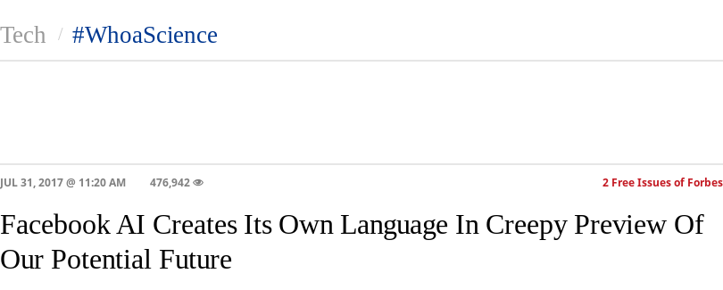
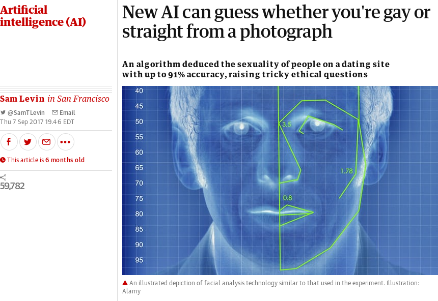

Artifical Intelligence: Misunderstandings and Consequences
Gregory Brinkman
Objectives of this talk
- To show how pop culture and modern journalism confuse the public about Artifical Intelligence
- To give a basic understanding of how Artifical Intelligence works
- To show how Artifical Intelligence can impact humanity in big ways
Pop Culture and Sensationalist Journalism Confuse us about A.I.
Pop culture fails us
Terminator is an action film that symbolizes 'fear of technology'. None of the science is real.
Journalism fails us
Articles like this, from Forbes, exagerate specific details of the event.
How A.I. works
What is A.I.?
An A.I. system is a system that attempts to find an unknown solution to a problem. It usually includes pattern recognition and repetition to find better solutions.
Evolutionary and Genetic Algorithms

What a good A.I. system needs
An AI's Output is only as good as its Input
- These valentine candy messages were generated with a small amount of data (360 candy messages).
'Perfect Information' vs 'Hidden Information'
- Deep Blue, a computer program, beating Gary Kasparov, the highest ranked chess player at the time.
A good 'objective function' for A.I. systems
An automous vehicle doesn't just need to“get the vehicle from point A to point B”An automous vehicle needs to
“get the vehicle from point A to point B, while obeying all traffic signals and watching out for other vehicles and debris on the road”
It's impossible to fully encompass a problem in the real world.
Recap
What a good A.I. system needs
- A large dataset
- A way to deal with hidden information
- A specific problem to solve
possible consequences of A.I.
Automated Systems can be exploited
- Facebook Fake News
- Logan Paul Feeback Loop
- Search Engine Optimization
A.I.'s effect on unemployment
“Roughly 47% of total U.S. employment is at risk from computerization.” (Morikawa, p. 1055)
Combination of AI and Prejudice
- Do you show your face on social media?
Will A.I. ruin our lives?
Not so fast! We are living during a civilizational revolution. AI could make utopia societies possible.
Time will tell.
Works Cited
- Alexander, Julia. "No one knows how YouTube's Trending section works." Polygon, 21 Feb. 2018. polygon.com/2018/2/21/17035758/how-does-youtube-trending-work-parkland/. Accessed 25 Feb. 2018.
- Dubhashi, Devdatt and Shalom Lappin. "AI Dangers: Imagined and Real." Communications of the ACM, vol. 60, no. 2, Feb. 2017, pp. 43-45.
Works Cited (Cont.)
- Morikawa, Masayuki. "Firms' Expectations about the Impact of AI and Robotics: Evidence from a Survey." Economic Inquiry, vol. 55, no. 2, Apr. 2017, pp. 1054-1063.
- Raj, Ajai. "Here's What 'Terminator' Gets Wrong About AI." Business Insider, 21 Oct. 2014, businessinsider.com/terminator-is-wrong-about-ai-self-awareness-2014-10/. Accessed 25 Feb. 2018.
Works Cited (Cont.)
- Simonite, Tom. "No, Facebook's Chatbots Will Not Take Over The World." Wired Magazine, 1 Aug. 2017, wired.com/story/facebooks-chatbots-will-not-take-over-the-world/. Accessed 25 Feb. 2018.
- Sokol, Joshua. "Why Self-Taught Artifical Intelligence Has Trouble With the Real World." QuantaMagazine, 21 Feb. 2018, quantamagazine.org/why-self-taught-artificial-intelligence-has-trouble-with-the-real-world-20180221/. Accessed 25 Feb. 2018.
Images Used
https://www.forbes.com/sites/markhughes/2016/01/28/how-to-save-the-terminator-franchise/#25abc0d84f72
https://www.forbes.com/sites/tonybradley/2017/07/31/facebook-ai-creates-its-own-language-in-creepy-preview-of-our-potential-future/#5a4a724c292c
Images Used (Cont.)
https://giphy.com/gifs/drunk-computer-simulation-ItoYW9TIBNCg0
https://www.cnet.com/news/ai-generated-valentines-day-candy-heart-ideas-dorky-but-fresh/
Images Used (Cont.)
https://www.forbes.com/sites/davidewalt/2011/05/03/kasparov-vs-deep-blue/#3b70265030f8
https://www.theguardian.com/technology/2017/sep/07/new-artificial-intelligence-can-tell-whether-youre-gay-or-straight-from-a-photograph